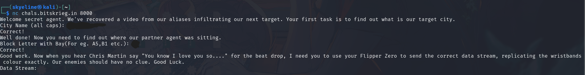
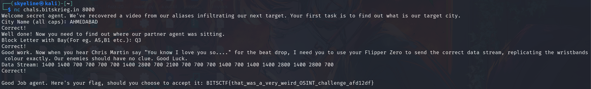

BITSCTF write-up HotPause
Write-up for the challenge HotPause for the OSINT category
Hello everyone, this is a write-up for the OSINT challenge "HotPause"
in this challenge, we were given a video file named "concert.mp4" and from the downloadable mp4 file, you were also given a host address and a port number which we needed to connect to using netcat
nc chals.bitskreig.in 8000
after connecting using netcat, you were prompted with 3 questions, for which you had to use your knowledge of OSINT:

looking at the first question, the answer can be found with a simple google search by searching for all the cities where the concert was held and after trying all the city names, the answer is "AHMEDABAD"
For the second question, using google is more than enough as after knowing the city where the concert happened, you can easily find the stadium and where our agent was sitting, after that using the power of inagination and visualisation, you can guess in which block was out agent sitting in.
The answer is "Q3"
Now for the last question, it may seem a bit overwhelming but trust me it's not.
Firstly you need to know how the wristbands light up simultaneously, what technology it uses to search for the answer. The Wristbands light up together (as seen in the video) due to IR and after knowing how they worked, we need to search for the correct data stream as the answer. In the video, "yellow" was the color that lit up the whole stadium when the beat dropped and to find the data stream for yellow, we need to find a table that shows all the data streams for all colors, like a table. So after googling, i happened to find a , github link and through that, i found this:
name: YEL
type: raw
frequency: 38000
duty_cycle: 0.330000
data: "1400 700 700 700 700 1400 2800 700 2100 700 700 700 1400 700 1400 1400 2800 1400 2800 700"
and here you go, the answer of the final question of the challenge is right in-front of your eyes.

Thank you for reading my write-up and i hope you have a good day :)